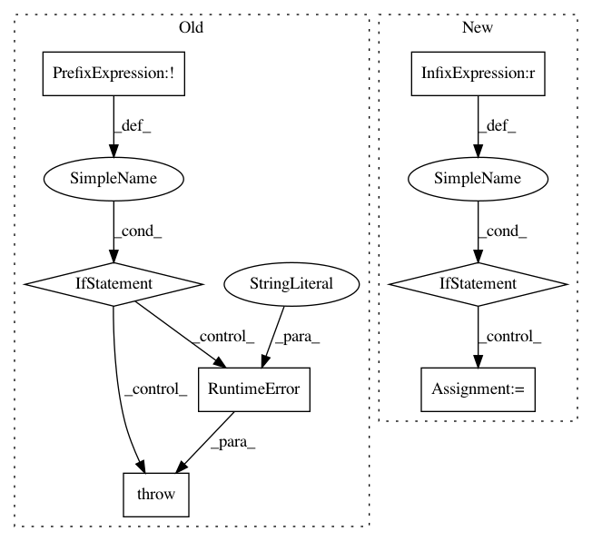

88e37703dfdd24274ad9744e07adf53a58a9300e,lib/streamlit/ScriptRunner.py,ScriptRunner,_run,#ScriptRunner#,133
Before Change
_script_thread_id = threading.current_thread().ident
assert _script_thread_id != self._main_thread_id
if not self.is_fully_stopped():
// This should never happen!
raise RuntimeError("Script is already running")
// Reset delta generator so it starts from index 0.
import streamlit as st
st._reset()
self._state_change_requested.clear()
After Change
assert _script_thread_id != self._main_thread_id
cur_state = self._state
if cur_state != State.STARTING_THREAD:
// TODO: Fix self._state-related race conditions
raise RuntimeError("Bad state (expected=%s, saw=%s)" % (State.STARTING_THREAD, cur_state))
// Reset delta generator so it starts from index 0.
import streamlit as st
st._reset()
self._state_change_requested = False
self._set_state(State.RUNNING)
// Compile the script. Any errors thrown here will be surfaced
// to the user via a modal dialog, and won"t result in their
In pattern: SUPERPATTERN
Frequency: 3
Non-data size: 7
Instances
Project Name: streamlit/streamlit
Commit Name: 88e37703dfdd24274ad9744e07adf53a58a9300e
Time: 2019-06-03
Author: tconkling@gmail.com
File Name: lib/streamlit/ScriptRunner.py
Class Name: ScriptRunner
Method Name: _run
Project Name: allenai/allennlp
Commit Name: be97943a42e55ac68c75794187a1c84be5f8d898
Time: 2020-08-31
Author: mattg@allenai.org
File Name: allennlp/common/from_params.py
Class Name:
Method Name: infer_params
Project Name: keras-team/keras
Commit Name: 365f621b24631a03f995e3b30e1800d327e42fc1
Time: 2017-04-24
Author: joshuarchin@gmail.com
File Name: keras/layers/recurrent.py
Class Name: Recurrent
Method Name: reset_states